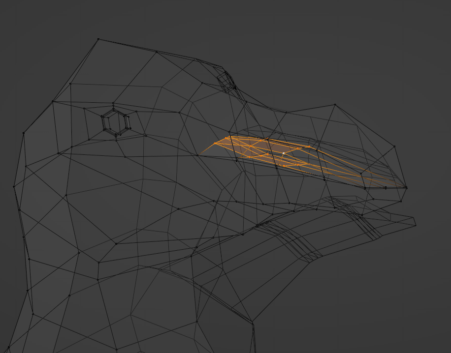

Dr Pepi
Brief
Create a unique character and accompanying assets for the game "Earth Ruins".
Aim
To design a low-poly models to maintain optimal performance and cohesive visual style.
Role in Project
3D Artist
Software
- •Blender 3.1
- •Substance 3D Painter
- •Photoshop
- •SketchBook
Table of Contents
Preparation
1.1 Introduction
1.2 Inspirations
1.3 Sketching
Model Execution
2.1 Base Mesh
2.2 Tail
2.3 Head
2.4 Legs
2.5 Feet
2.6 Nails
2.7 Flipper
2.8 Eyes
2.9 Beak
High Poly to Low Poly Workflow
Stylised Character Design
3.1 Hair
3.2 Jacket
3.3 Goggles
Texturing
Scene Creation
Final Render
Assets
Animation
Preparation
1.1 Introduction
Our group project focuses on the development of a side scroll game titled "Earth Ruins," drawing inspiration primarily from the critically acclaimed game 'Little Nightmares'. We aim to adopt a low-poly 3D art style that evokes a unique aesthetic. Our main character will be a penguin, selected to symbolise climate change and provide a distinctive non-human perspective in this post-apocalyptic narrative.
The game unfolds in a world devastated by humanity's failure to achieve sustainable development goals (SDG) by 2030. With Earth in ruins, players will navigate through various levels, utilising obstacles like cardboard boxes and essential items such as solar panels to progress. When activated using light, the solar panel is crucial for opening doors that lead to subsequent challenges. Ultimately, the primary objective is for players to gather materials and resources to construct a rocket ship, with the goal of escaping the remnants of our decayed world.
1.2 Inspirations
The artistic direction for our main character draws from four distinct penguin species: King, Emperor, African, and Macaroni penguins. Our team unanimously agreed to feature the Macaroni penguin due to its charming appearance and distinctive features, making it an ideal candidate to connect emotionally with players throughout their journey.
1.3 Sketching
In developing our penguin character, I have produced a series of sketches aimed at establishing a strong and cohesive identity for our hero. To enhance its charm and appeal, I have incorporated stylised features such as a cosy jacket, goggles, and whimsical, thick hair. These design elements not only infuse the character with distinct personality, but also reinforce its functional role within the game's narrative. Through these thoughtful additions, the Macaroni penguin emerges as an iconic figure within the Earth Ruins universe.
Model Execution
In this video, I present the detailed process of creating a penguin character model. Using a combination of screenshots and clay rendering techniques, I documented each step of the modelling process, from initial design concepts to the final touches. The screenshots provide a clear visual progression, showcasing the various stages of development. Once all elements were compiled, I seamlessly integrated them into a cohesive video, allowing viewers to appreciate the modelling process.
2.1 Base Mesh

In the initial phase of my modelling process, I incorporated a reference image in the background to facilitate the creation of the form more efficiently. This visual aid allowed greater precision as I began modelling from the side view using a cube primitive. By performing a series of extrusions, I extended the bottom faces downward to establish the foundational shape. Subsequently, I adjusted the side vertices outward, ensuring the form conformed accurately to the dimensions and contours depicted in the reference image. This methodical approach enabled me to achieve a solid base structure, setting the groundwork for further detailing in the modelling process.
2.2 Tail

Afterwards, I created the tail. I made it by selecting the second bottom face of the front view. Then I inserted an extra face and moved downward. Lastly, I extruded two times and moved vertices inward.
2.3 Head

The head part I created by extruding the top faces a few times and moving vertices inward. Then slightly rotating the top faces and scaled inward, and then again extruded the top faces. These actions I repeated a few times until I got the beak.
2.4 Legs

I inserted an extra face on the bottom polygon, moved downward and extruded a few times. Then the end face scaled inward and again extruded a few times.
2.5 Feet


I sliced the front face a few times and extruded into the y-axis by selecting individual faces and scaled inward. Then added a loop cut in the middle, and the top edges moved downward.
2.6 Nails

This part I created by inserting on the toes extra faces slightly moved into y-axis, and again inserted extra faces, rotated and I extruded a few times, scaled inward, rotated and again scaled inward.
2.7 Flipper
I inserted an extra face on the side. Then extruded outward and moved down, scaled the end faces inward, and again extruded and moved down and repeated. Next, by selecting edges, I moved in -y-axis and on the end a bit inward. Lastly, I added a couple of loop cuts and the first loop cuts I slightly scaled inward.
2.8 Eyes
I inserted an extra face between the beak and head area. Then I clicked the right mouse on the appeared menu loop tools, selected the circle, and scaled it down. I rotated and pushed it out a bit.
2.9 Beak
I inserted an extra face between the beak and head area. Then I clicked the right mouse on the appeared menu loop tools, selected the circle, and scaled it down. I rotated and pushed it out a bit.
High Poly to Low Poly Workflow
In my pursuit of a realistic bumpy skin texture for a penguin model, I employed a systematic approach to transition from a high-resolution mesh to a low-poly counterpart. Initially, I duplicated the low-poly model and unwrapped it to create a 2D texture map while keeping the original model hidden. To enhance the mesh detail, I applied a multi-resolution modifier, subdividing the geometry five times. This smooth surface provided an optimal base for sculpting intricate details (see Figure 3.1).
Next, I entered sculpt mode and applied an alpha texture that mimicked the natural skin pattern of a penguin (refer to Figure 3.2). After achieving the desired level of detail in the sculpted mesh, I proceeded to bake the high-poly data onto the low-poly model. By selecting both the high-poly and low-poly meshes, I generated normal maps that captured the sculpted nuances (illustrated in Figure 3.3). The final outcome is a low-poly model enriched with realistic sculpted details, enhancing its visual fidelity while maintaining efficient geometry (shown in Figure 3.4). This method effectively blends high-resolution aesthetics with the practical needs of low-poly modelling.
Stylised Character Design
The creation of a stylised character involves several key components that contribute to its unique and appealing design. Each element, from hair and clothing to accessories, is crafted with creativity, allowing for a cohesive look that enhances the character's personality.
This section delves into the methodologies and artistic choices made throughout the modelling process, focusing on the hair, jacket, and goggles.
Hair
To create the character's hair, I began by selecting and copying the top surface of the head. Once in edit mode, I extruded the mesh upward, utilising the grab tool to achieve a more stylised form through additional extrusions. After shaping the hair to my liking, I applied a subdivision surface modifier set to level 1 for a smoother appearance. This process ensured that the hair not only looked aesthetically pleasing, but also complemented the character design.
Jacket
For the jacket, I isolated and copied the surface from the main body of the penguin character. In edit mode, I selected a vertical edge down the centre and used the shortcut (V) to create a seam, which I adjusted slightly to widen the gap between the edges. By selecting and scaling the top edges outward, I successfully enlarged the neck opening. To give the jacket depth, I applied a solidify modifier, creating a perception of thickness. I made additional adjustments to the shoulder edges and sleeves, using proportional editing for a tailored fit. To complete the look, I designed a simple button from a cylinder and duplicated it for added detail.
Goggles
The goggles were crafted from a scaled-down plane. I began by adding a loop cut and removing half of the geometry to create the desired shape. After adding another loop cut and scaling the middle edges inward, I applied a subdivision surface modifier set to level 2 for smoothness. A mirror modifier was then added and applied to ensure symmetry. To enhance the design, I inserted additional faces and applied a solidify modifier for frame thickness. Extruding around the edges helped achieve more substantial frames, before I adjusted the shape further using proportional editing on the z-axis for a better fit. Finally, I inserted faces within the glass area to create visible edges between the frames and the lenses. For the finishing touch, I used a simple deform modifier with an empty object to bend the goggles into the desired shape, achieving a stylish and functional look.

Texturing
In the texturing phase of Dr. Pepi's model, I opted for a straightforward approach, using a Principled BSDF shader in Blender to establish the base colour for his hair, eyebrows, and jacket buttons. For the remaining textures, I turned to Adobe 3D Substance Painter. Being a newcomer to this software presented a challenge, but it intrigued me enough to delve deeper into its capabilities. However, my limited experience made achieving a cartoonish aesthetic more difficult, resulting in textures that leaned toward a realistic appearance.
Body
For the character's body, I created an alpha channel skin texture, utilising black and white values to define the skin tone. This approach helped establish a clean and clear visual foundation.
Jacket
The jacket was created using a specific fabric texture, which I enhanced with an additional layer of orange to align with our game's branding. However, I noticed some imperfections along the front edges of the jacket, which appeared stretched and inconsistent with the overall design. Upon reflection, I realised these issues arose because the texture maps had already been created, and my decision to add more polygons to the mesh resulted in the texture being distorted.
To resolve this, I will need to recreate the texturing process, particularly in relation to the altered mesh. Unfortunately, due to time constraints related to upcoming presentations, I was unable to retexture the jacket before the deadline. Nevertheless, I plan to dedicate time in the future to address these texture issues and enhance the jacket's visual appeal.
Goggles
For the goggles, I aimed for a stylised, bumpy appearance that matched my initial sketches. A metal panel texture was applied, which I scaled to enhance visibility. Finally, I added a complementary colour layer, matching the orange of the jacket, and applied a purplish glass material to complete the look.
Hair & Eyelashes
The hair and eyelashes were rendered using a simple procedural texture, predominantly focusing on establishing a solid base colour. This streamlined approach helped maintain consistency across the character's design, while ensuring a cohesive visual experience.
Overall, the texturing process for Dr. Pepi challenged my skills and pushed me into new software territory. I look forward to refining my techniques and addressing the identified issues.
Scene Creation
As I approached the final phase of my portfolio, I wanted to showcase my penguin character, Dr. Pepi, in an appealing snow environment. My goal was to maintain simplicity and efficiency, minimising unnecessary elements in the scene. To achieve this, I started by creating a flat plane to serve as the ground for Dr. Pepi, scaling it along the x-axis to provide a wider area for the character to inhabit. For the snowy effect, I utilised a procedural texture that I developed by following a detailed tutorial, ensuring a realistic winter ambiance (Figure 4.1).
Next, I incorporated a landscape mesh using Blender's add-ons (figure 4.2). This mesh was scaled multiple times to give it depth and dimension, and I duplicated it for the distant background to enhance the scene's perspective. After positioning the landscape to align with the camera view, I applied the same snow texture from the plane to maintain consistency throughout the environment—a quick process made easier by using the (Ctrl+L) shortcut to link the materials.
To add depth to the scene, I implemented a traditional three-point lighting setup, which efficiently highlighted Dr. Pepi while creating a soft atmosphere around him. The final touch involved blurring the background to draw attention directly to my main character. I achieved this by selecting the camera, enabling the depth of field option, and increasing the f-stop, resulting in a beautifully focused foreground that accentuates Dr. Pepi as the centrepiece of my work (Figure 4.3).

Final Render
I am excited to showcase the final render of Dr. Pepi in his enchanting snowy environment. The thoughtfully designed terrain combined with a procedural snow texture creates a vibrant, serene backdrop that complements my character beautifully. A three-point lighting setup highlights Dr. Pepi's charming features, while the blurred background directs focus toward him. This composition captures the playful spirit of the character and the whimsical nature of his winter surroundings, making it a proud addition to my portfolio.
Assets
I am pleased to present the final rendered assets for our group game project, which I have created. As outlined in the previous section, the project comprises three essential assets designed to enhance gameplay and immersion.
The first asset is the Cardboard (Figure 5.1), which serves as an obstacle for players to navigate by jumping over or manoeuvring around, adding a layer of challenge to the game.
The second asset, the Solar Panel (Figure 5.2), plays a crucial role in game progression. When activated, it triggers the opening of a door, allowing players to advance to the next level.
Finally, we have the Work Light (Figure 5.3), an essential tool that activates the solar panel. This asset not only facilitates gameplay mechanics, but also encourages player interaction and strategic planning.
Together, these assets contribute to a cohesive gaming experience that balances challenge and engagement.
Animation Techniques:
A Step-by-Step Guide
Animation
For our game, we didn't require character and asset animations, but I took the initiative to develop these skills on my own. I was particularly curious about animating our penguin character, Dr. Pepi, and I also explored creating a turntable animation for the assets. This experience not only allowed me to experiment with animations, but also to make certain parts of the assets functional through rotation. Overall, this work was a valuable opportunity for me to enhance my animation abilities.
Dr. Pepi Walking
In the initial phase of animating Dr. Pepi, I pressed the auto key on the timeline, which automatically fixed my movements. Entering pose mode, I began by selecting the bones for movement. For my first pose, I moved the right leg by grabbing it downward. Next, I selected the main bone and bent the body to the right side. Then, I adjusted the left leg bone slightly upward. With the first pose complete, I selected all bones using the shortcut (A), pressed 'I,' and in the menu that appeared, I inserted the location, rotation, and scale.
Following this, I advanced the timeline to frame 10 and mirrored the process on the opposite side with coordinated movements for the left leg. I also included slight movements of the neck and head. Again, I selected all bones and pressed 'I' for the location, rotation, and scale. Continuing my work, I dragged the timeline to frame 100, where I needed the penguin to be positioned. I pressed 'G' to grab Dr. Pepi, and moved him upward to indicate a jump. After selecting all bones, I grabbed them up and recorded the key frame with 'I,' marking the location, rotation, and scale. Subsequently, I moved the timeline to frame 110, bringing Dr. Pepi back down and recording another key frame.
At frame 120, I aimed for the penguin to look directly at the camera. I adjusted the neck bone slightly to face the camera, recording another key frame for the location, rotation, and scale. Finally, I moved the timeline to frame 150, where I animated Dr. Pepi waving by lifting the hand bone and once more recorded the key frame. To ensure continuity, I went back to the beginning of the timeline and duplicated the walking movements up to frame 100.
Work Light Animation
For the work light animation, I utilised two cameras. The first camera operated until frame 100. I added a curve circle and attached the camera to follow this curve by applying a constraint to the active camera, targeting the curve. I selected the appropriate axis, ensured the “follow curve” option was ticked, and pressed “animate path.” Additionally, I implemented a "track to" constraint on the active camera to keep it focused on the work light model.
At frame 100, I switched to my second camera, which was set to track the model. I added a key frame by pressing 'I' at the start panel. Moving the timeline to frame 200, I adjusted the camera's Y-axis location, increasing it to my desired position and hitting 'I' to record this change. From frame 200 onward, I animated the work light to rotate and added a light key to turn the light switch on when the head of the work light began to rotate. To enhance the animation, I added several keys for light colour changes, transitioning through four colours over 20 frames, along with animating the light's strength.
Solar Panel Animation
For the solar panel animation, I began by adding an empty object. I then selected the model, activated the empty (indicating it with a yellow outline), and used the shortcut (Ctrl+P) for parenting the two. At frame one, I recorded the initial position by pressing 'I' and selecting location and rotation to create a key frame. Moving the timeline to the last frame, I adjusted the Z rotation to 360 degrees, then pressed 'I' again while hovering over the transform panel. By default, the animation is set to bezier interpolation, which caused the speed to slow toward the end. To correct this, I changed the interpolation type to linear by using the shortcut (Ctrl+T) with my cursor positioned on the timeline. This adjustment ensured consistent speed throughout the animation of the solar panel.